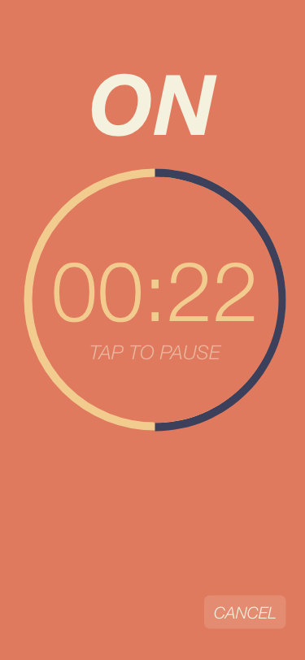

My first attempt at developing an app! Using Dart and Google's Flutter.
The Inspiration
Over quarantine I got into doing a lot of home workout videos on YouTube. Shoutout to my favorite fitness YouTubers Blogilates, Chloe Ting, and Pamela Reif! A lot of these types of videos use interval training (x seconds on, y seconds rest), and I started to really enjoy this format for exercising.
I decided to make an interval timer app because:
- I want to do my own interval training workouts or workouts shared on platforms other than YouTube (ie Instagram)
- YouTube has some limitations when it comes to workout videos.
- I can't listen to my own music or watch Netflix while I workout
- I feel limited to only doing these workouts at home. While having video to follow along to has its perks, sometimes it's unnecessary/inconvenient.
- I want a place to plan out workouts and organize/save them
- I want to learn about app development
Goals
Create a functioning interval timer. The user should be able to input the ON time and OFF time, as well as choose whether to have the timer run indefinitely until cancelled, or to specify a number of repetitions. The timer should be able to pause/unpause, and have audio cues as to when the interval or timer is over.Create a workout Need to create a page for saved workouts as well as a page where the user can create one. The user can name this workout and save it. When a saved workout is played, the timer starts and displays which exercise to do at the top. The user chooses the ON and OFF time, and then can add as many exercises as they'd like. Can have the option for the app to read out the upcoming exercise so that the user doesn't have to check.- Learn how to integrate a SQL database for saved workouts.
Settings A settings page. Toggle audio cues (voicing upcoming exercise, warning beeps for last three seconds, beeps for when the interval is over)
Mockups
Created using Adobe XD
Basic Timer |
||

|
 |

|
Timer with reps |
||

|

|

|
Timer with workout |
Create workout |
|

|

|

|
Saved workouts |
||

|

|

|
Progress
January 27, 2021
Created a functioning interval timer
This took me a little under a week to complete. Overall I think learning how to use Flutter and getting used to Dart is going pretty smoothly. The hardest part was definitely getting the audio cues in. I wanted there to be beeps to countdown the final three seconds of every interval as kind of a warning that the interval is about to end, and then a different sound when the interval actually ends. CircularCountDownTimer has a parameter to trigger an action once the timer is completed, but can't trigger an action at a specific point during the timer. At first I tried other countdown/timer packages but none had this specific attribute. I also tried to start a timer behind the scenes, but it wouldn't align exactly to the main timer and wouldn't account for pausing/unpausing. I was eventually able to figure this out by "hijacking" the package itself and editing it to meet my needs.